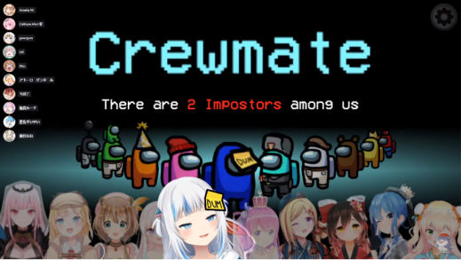
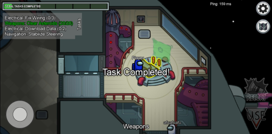
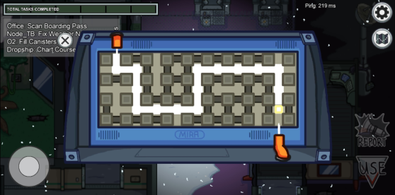
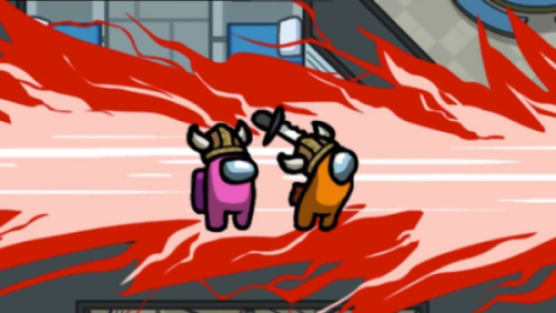
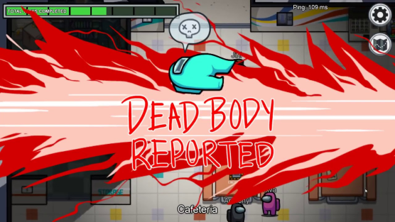
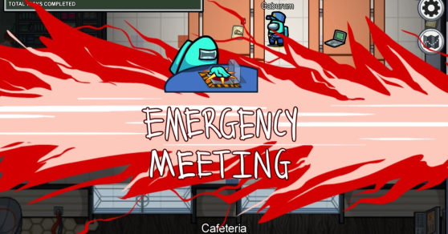
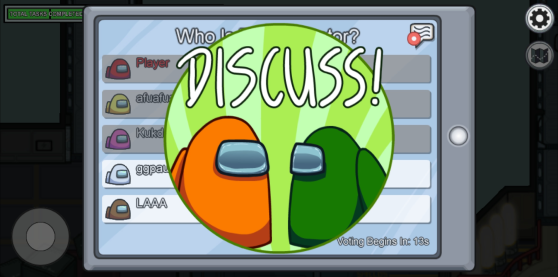

遊戲介紹
Among Us! 是一款多人同樂的心機類陣營推理遊戲。
遊戲以太空為主題，玩家將來到一艘太空飛行船上，想辦法和眾人齊心協力的完成太空任務。
玩家將扮演船員或入侵者之一。船員的目標找出入侵者並完成任務，而入侵者的目標是殺死所有船員而不被發現。
遊戲玩法
遊戲每局最多十人進場，其中將設定有著1-3名入侵者，其餘玩家則是扮演船員。
船員要以小遊戲的形式在地圖上完成任務，其中包括對重要系統的維護工作。
入侵者會得到虛假的任務清單以便混在船員之中，入侵者可以識別其他入侵者的身份並有能力破壞地圖系統，穿越通風口和殺死船員。
如果玩家死亡，他們將變成幽靈。除了變成幽靈的死亡玩家，其他玩家都無法看見幽靈。
除了幽靈以外，所有玩家都只能看到有限的距離。

遊戲規則
船員勝利條件
船員需要前往場上各個有著驚嘆好的場所，完成屬於自己的任務或找到並消滅所有入侵者獲勝，
 入侵者勝利條件
入侵者需要殺死一定數量的船員，使剩餘的人數等同入侵者的人數或進行破壞活動，例如關閉所有燈光，或開始倒計時，如果船員沒有在倒計時結束之前解決的話，所有船員將死亡。
發現屍體
如果某位玩家發現了屍體，可以立即檢舉並強制所有玩家參加小組會議，投票選出疑似入侵者的玩家，投票採用相對多數制，獲得票數最高的玩家將會立即死亡變成幽靈。
緊急會議
玩家還可以隨時按下地圖上的「緊急會議」按鈕來召開會議。遊戲是通過文字進行聊天，只有活著的玩家才能在會議期間進行交流，而幽靈只能在幽靈之間交流
 